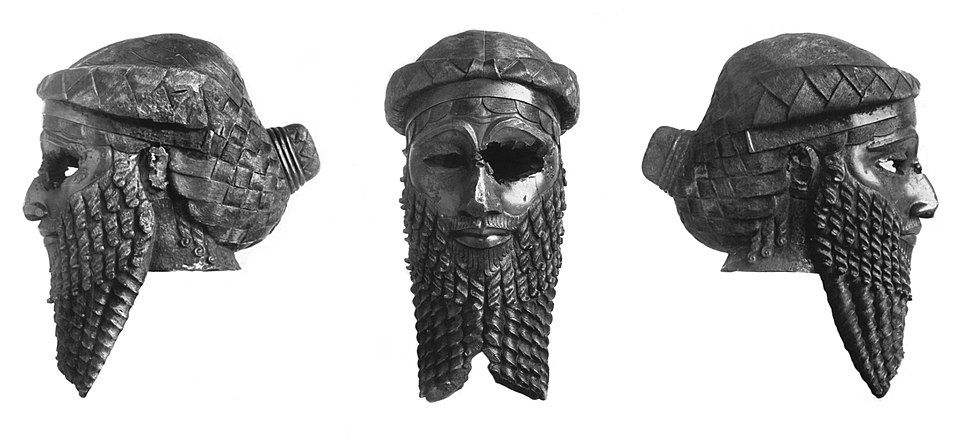
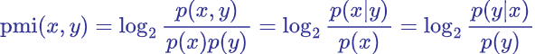
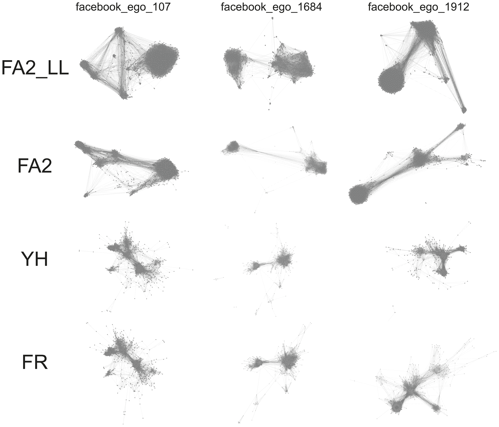

Muinaiset kielet, sanasemantiikka ja laskennalliset menetelmät
Tutkimuksen tekijät
- ANEE: Ancient Near East Empires, Suomen Akatemian huippuyksikkö
2018-2025
- Muinainen (ensimmäinen vuosituhat eKr.) lähi-itä (Mesopotamia, “kaksoisvirran maa”)
- Digihumanismi, arkeologia, yhteiskuntatieteelliset teoriat
- Tero Alstola, Saana Svärd, Aleksi Sahala, Eleanor Bennett ym.
Tutkimuksen tekijät
Minä (Sam Hardwick)
En assyriologi, vaan kieliteknologi
Silloin HY:llä, nyt CSC:llä kehittämässä Kielipankkia
Akkadin kieli
Kuuluu kuolleeseen itäseemiläisten kielten perheeseen
Käytössä n. 2500 eKr. - 500 eKr.
Vaikutti vahvasti aramean kieleen, jolla lopulta korvautui
Gilgamešin eepos
Akkadin kieli
| akkadi | heprea | arabia | suomi |
|---|---|---|---|
| bītum | báyit (בַּיִת) | bayt (بَيْت) | talo |
| šarrum | śar (שַׂר) | sarī (سَرِيّ) | kuningas / prinssi / viranomainen |
| ilum | ʾēl (אֵל) | ilāh (إلٰه) → Allāh (الله) | jumala |
| šulmu | šālōm (שָׁלוֹם) | salām (سلام) | rauha, hyvinvointi |
Nuolenpääkirjoitus
Meille säilynyt versio kirjoitetusta akkadista on nuolenpääkirjoitus, savitauluihin painettuja kolmio- ja viivamuotoja
Logosyllabinen järjestelmä: joitain sanoja vastaa logogrammi, (“kuva”), muut kirjoitetaan tavumerkeillä
Lainaa sumerista, alueen aiemmasta valtakielestä, joka on isolaatti mutta säilyi seremoniallisessa käytössä itsenäisesti
Nuolenpääkirjoitus

Nuolenpääkirjoitus
Savitauluja on säilynyt yllättävän suuri määrä, n. 500 000
Niistä on translitteroitu, käännetty ja julkaistu vain pieni osa, n. 10%
Mesopotamia

Mesopotamia
- Sumerin kaupunkivaltiot 5500 - 1800 eKr (Ur)
- Akkadin valtakunta 2300 - 2100 eKr (Sargon akkadilainen)

Mesopotamia
- Assyrian ja uus-Assyrian valtakunta 2000 - 600 eKr.
(Tukulti-Ninurta, Tiglath-Pileser,
Ashurnipal, Nineven kirjasto)
- Tuttuja myös VT:stä! (2. Kuninkaiden kirja, Aikakirjat ym.)
- Uus-Babylonian valtakunta 626 – 539 eKr. (Nebukadressar)
- VT: Jerusalemin valtaus, karkoitus Babyloniaan
Haasteita
Kieliaineisto kattaa pitkiä ajanjaksoja, sitä on paljon, ja sen tulkinta on vaikeaa (ja tulkintakykyisiä tutkijoita on vähän)
Voisiko laskennallisilla menetelmillä paljastaa aineistosta kulttuurillisia ja sosiaalisia ilmiöitä?
- Henkilönimien muodostamat sosiaaliset eliitit
- Semanttiset ilmiöt
Sanasemantiikka
- Jakaumahypoteesi (distributional hypothesis): sanoilla,
joiden ympäristöt ovat samanlaisia, on samanlainen merkitys
- elokuva oli loistava
- elokuva oli erinomainen
- elokuva oli hirveä
- otin omenan pöydältä
- otin omenan puusta
Sanasemantiikka
| loistava | erinomainen | elokuva | kolme | |
|---|---|---|---|---|
| loistava | 3 | 57 | 4 | |
| erinomainen | 3 | 39 | 5 | |
| elokuva | 57 | 39 | 11 | |
| kolme | 4 | 5 | 11 |

PMI
- Pointwise mutual information: miten paljon todennäköisempää on sanan A esiintyminen sanan B ympäristössä kuin yleensä?

- Tuottaa pareittaisia etäisyyksiä, ei vektoriavaruutta
Sanaupotusten tulkinta
Sanaupotuksia käytetään yleensä sovelluksissa, ei suoraan tulkintaan
Sanoupotukset muodostavat yleensä n. 100-ulotteisen avaruuden
PMI-parit muodostavat verkoston, jossa on N^N kaarta
Demo: ulotteisuus
Miten tehdä tulkittavampia upotuksia?
PCA (principal component analysis), LDA (linear discriminant analysis), …
Ongelma: yleensä kieliopilliset ilmiöt dominoivat semantiikkaa
Verkostojen asettelualgoritmit
Joko upotusten läheisyydestä tai PMI-pareista voidaan tehdä “puoleensavetäviä voimia” ja mallintaa sanastoa 2D-verkkona
“Fysiikkasimulaatio” päätyy tasapainotilaan
Yifan Hu, Fruchterman-Reingold, ForceAtlas
ForceAtlas2: Mathieu Jacomy et al. (2014)
Asettelualgoritmit

Demo: ANEE-portaalit
Sovellukset

Sovellukset

Linkkejä
Kuvakrediitit
Assurbanipalin sotaretki: kaappaus teoksesta Smith, George: History of Assurbanipall, Translated from the Cuneiform Inscription (1871, archive.org/details/bub_gb_pFk53uejMjcC/page/n63/mode/2up)
Uus-Babylonian kartta: en.wikipedia.org/wiki/Neo-Babylonian_Empire#/media/File:Neo-Babylonian_Empire_under_Nabonidus_map.png
{kind=link}
Sargonin naamio: commons.wikimedia.org/wiki/File:Sargon_of_Akkad_(1936).jpg
.jpg){kind=link}
Asettelualgorimit: journals.plos.org/plosone/article?id=10.1371/journal.pone.0098679